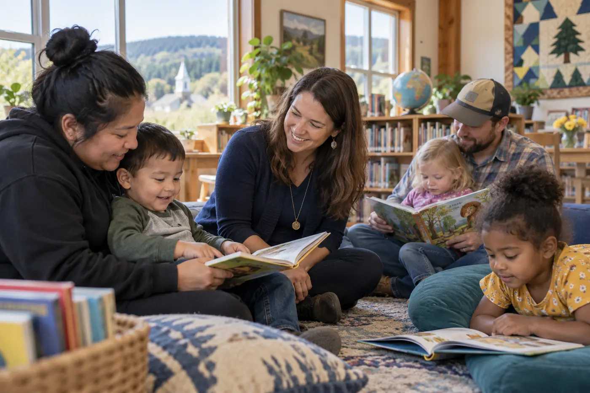

HCIF invests in community-informed nonprofit initiatives that expand opportunity, strengthen well-being, and produce meaningful, measurable benefits.
Annual grant cycle now open
Stronger communities.
Greater opportunity.
Sustainable change.
We invest in nonprofit organizations that address root causes, expand access to opportunity, and create measurable community impact.
Award range$50,000–$100,000
Letter of InquiryAugust 15 annually
Full proposalSeptember 30 annually
Geographic focusUnited States
Our purpose
Opportunity grows when communities lead.
We envision thriving communities where all people have equitable access to the opportunities, resources, and support they need to succeed.
What we fund
Six priorities. One commitment to community.
We support practical, community-informed work across interconnected areas that shape opportunity and quality of life.
01
Education
Learning that opens doors
Explore priority →02
Workforce Development
Skills that lead to opportunity
Explore priority →03
Health & Wellness
Conditions that help people thrive
Explore priority →04
Community Development
Strong places and connected neighbors
Explore priority →05
Technology & Digital Access
Digital access for full participation
Explore priority →06
Environmental Sustainability
Resilient communities and shared resources
Explore priority →Grants & impact
Local leadership. Visible results.
Selected partners show how clear needs, practical design, and trusted relationships can create lasting value.

Family literacy across three rural counties
BridgePoint paired after-school reading support with multilingual family workshops, helping 214 learners build literacy skills and home-learning routines.
214 learners served
BridgePoint Learning CollaborativeA neighborhood pathway to green careers
GreenWorks combined paid conservation projects, technical training, and employer partnerships for residents entering the regional green workforce.
48 residents trained
GreenWorks Neighborhood AllianceMobile access to preventive care
CommunityLink brought screening, referral, and telehealth navigation to neighborhoods where transportation and scheduling limited access to care.
620 residents reached
CommunityLink Health NetworkThe strongest projects begin with community knowledge and connect every dollar to a meaningful result.HCIF funding philosophy
Community Impact Grant
Have a project aligned with our priorities?
Review the opportunity, eligibility requirements, and annual cycle.